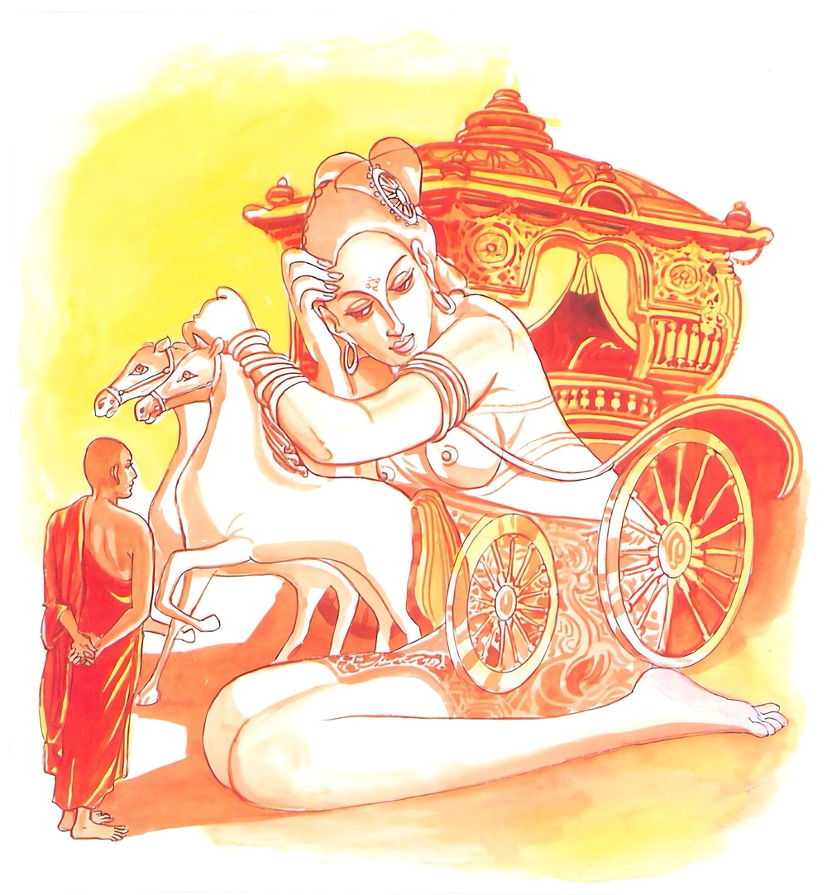

13-4 අභය රාජ කුමරුගේ කථා පුවත
මෙම කතාව සද්ධර්ම සාගරයෙන් ද කියවන්න.
එථ පස්සථිමං ලොකං චිත්තං රාජරථූපමං
යත්ථ බාලා විසීදන්ති නත්ථි සඞ්ගො විජානතං.
මෙහි ඵවු. යම් අත්බැවෙක්හි අනූවණයෝ (තෘෂ්ණා දෘෂ්ටි වශයෙන්) ගැලෙද් ද, නුවණැත්තනට යම් අත්බැවෙක්හි (රාගසඞ්ගාදි) කිසි සඞ්ගයෙක් නැද්ද, (රන් රිදී ඈ රුවනින්) විසිතුරු වූ, රාජරථයක් බඳු වූ (හෙවත් රජදරුවන් නැගෙන මඟුල් රියක් සේ වස්ත්රාභරණාදියෙන් විසිතුරු කරණ ලද) (ස්කන්ධාදි ලෝක යැ යි කියන ලද) මේ අත්බව බලවු.

"එථ පස්සථිමං ලොකංති” යන මේ ධර්මදේශනය ශාස්තෲන් වහන්සේ රජගහනුවර වේළුවනාරාමයේ වැඩ සිටිය දී අභය රාජ කුමරු නිමිති කරගෙන දේශනා කළහ.
අභය රාජකුමාරයා පසල් දනව්වක ඇති වූ අරගලයක් සංසිඳවා පැමිණිවිට බිම්බිසාර පියරජු සතුටු වී නැටීම ගී ගැයීම ආදියෙහි දක්ෂ නිළියක් දී දින හතක් රාජ්ය ශ්රීය විදීමට අවස්ථාව සලසා දුනි. මේ කුමරු දින හතක් ගෙයින් බැහැර නොවී රාජ ශ්රී අනුභව කරමින් සිට අටවැනි දින ගංතෙරට ගොස් ස්නානය කර උයනට පිවිසී සන්තති මහ ඇමති සේ එම ස්ත්රියගේ නෘත්ය ගීත ආස්වාද ලබමින් සිටියේය.
ඇයද එකෙණෙහි සන්තති මහා ඇමතිගේ නිළිය ලෙසටම බලවත් වාත රෝගයක් ඇති වී කළුරිය කළාය. කුමරු ඇය මිය යාමේ ශෝකයෙන් පෙළිමේ ශෝකය බුදුන් හැර වෙනත් කෙනෙකුට නිවාලිය නොහැකියයි. සිතා බුදුන් වෙත පැමිණියේය. පැමිණ ස්වාමීනි මගේ ශෝකය නිවා දෙන්නැයි ඉල්ලා සිටියේය. බුදුහු ඔහු සිත සනසා කුමාරය ඔබ මේ ස්ත්රිය නිසා මෙබඳුම මරණවලින් ඇඬූ කඳුළු ප්රමාණයක් නැතැයි පවසා කුමාරය නොතැවෙන්න. බාල අඥාන ජනයන්ගේ හැඩීම ශෝක කිරීම් ප්රයෝජනයක් නැතැයි පවසා මෙම ගාථාව දෙසූහ.
මේ අත්බව සිරුර - විසිතුරු දෙයින් සැරසු
මහරජුගේ රියමන් - දිලිසෙමින් බබළන්නේ
එය මමය මාගෙයි - ඇලුම් කරනා පුඟුලා
සසර සැරි සරමින් - විපතට පත්වන්නේ
යම් ආත්ම භාවයක අණුවනයෝ තෘෂ්ණා දෘෂ්ටි වශයෙන් ගැලේද නුවණැත්තවුන්ට රාගාදී සංයෝගයක් නැත. විසිතුරුවු රාජ රථයක් බඳු මේ ආත්මභාවය බලන්න.
එහි එථපස්සථ - යනු රාජකුමාරයාටම පැවසීමයි ඉමංලොකං මේ ස්ඛන්ධ ධාතු ආදී ලෝකය සංඛ්යාත ආත්මය චිත්තං යනු සප්ත රත්නවලින් විසිතුරු කරන ලද රජුගේ වාහනය සේ වස්ත්ර ආභරණවලින් විසිතුරු වීමයි. යත්ථබාලා යම් ආත්ම භාවයක අනුවණයෝම ඇලි සිටිති. විජාන තන්ති - නුවණ ඇති පඩිවරු එහි රාගාදි වශයෙන් ඇල්මක් නැත. යන අර්ථයි මේ දෙසුම කෙළවර අභයරාජ කුමරු සෝවාන් ඵලයේ පිහිටියේය. පැමිණි අයටද සාර්ථක දෙසුමක් විය.